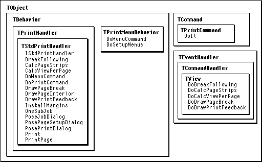

Legacy Document
Important: The information in this document is obsolete and should not be used for new development.
Important: The information in this document is obsolete and should not be used for new development.


Handling Print Menu Commands
Human interface guidelines specify that all Print commands be included in the File menu. MacApp defines command constants for the Print, Print One, Page Setup, and Show Breaks menu commands. These command constants are handled by theDoMenuCommandmethod of the print handler for the view to be printed or by theDoMenuCommandmethod of aTPrintMenuBehaviorobject attached to the view's document. Both of theseDoMenuCommandmethods call theDoPrintCommandmethod of the print-handler object. In theTStdPrintHandlerclass, theDoPrintCommandmethod handles Print commands as follows:
Figure 23-1 Printing classes and methods
- Has the command constant
cPrint. The print handler creates and posts aTPrintCommandobject. TheDoItmethod of the command object calls the print handler'sPoseJobDialogmethod to display the print dialog box and prepare for printing. If the user clicks OK, theDoItmethod calls the print handler'sTPrintCommandobject makes the printing operation recordable but not undoable.
The
- Print One
- Has the command constant
cPrintOne. The print handler creates and posts aTPrintCommandobject. TheDoItmethod of the command object does not display a print dialog--instead it calls the print handler'sSetupPrintOnemethod to validate the print record and set the first page to 1 and the last page to 9999. Then it calls the print handler's- Page Setup
- Has the command constant
cPageSetup. The print handler calls its ownPosePageSetupDialogmethod to display the page setup dialog box. If the user clicks OK, the print handler creates aTPrintStyleChangeCommandobject and posts it to the command queue; the command object makes page setup changes undoable.- Show Breaks
- Has the command constant
cShowBreaks. The print handler toggles the value of itsfShowBreaksinstance variable and calls its ownInvalPageFeedbackmethod to force redrawing of the view so that page breaks are shown or not shown, as specified.DoPrintCommandmethod also handles thecFinderPrintandcDragPrintcommand constants:
- Finder printing
- For
cFinderPrint, the print handler calls its ownSetupForFindermethod to prepare for printing, then calls its own- Drag printing
- The
cDragPrintcommand is handled similarly to the Print One command. The print handler first callsSetupPrintOne, then calls its own